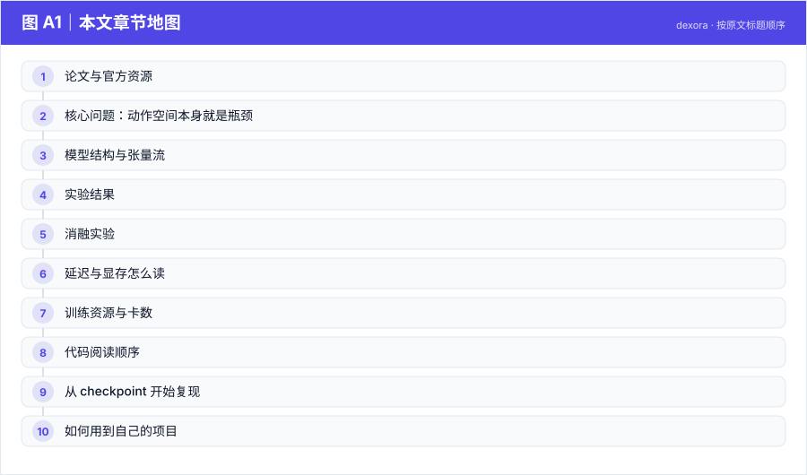
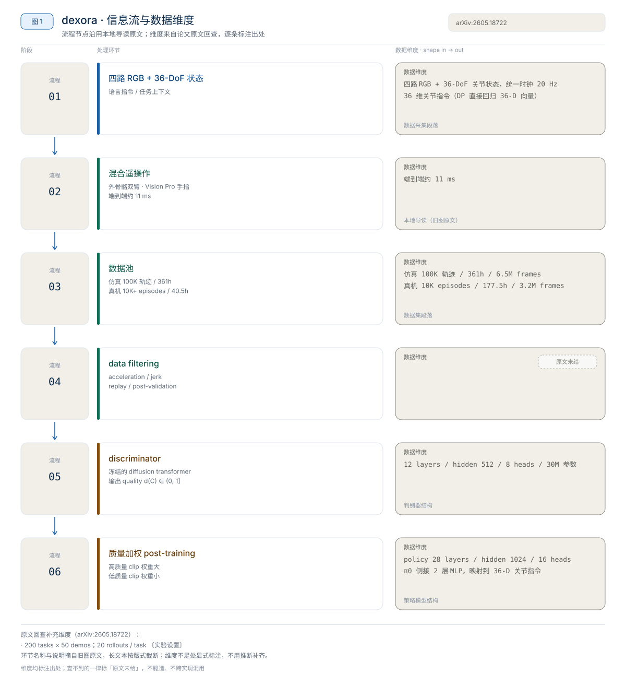
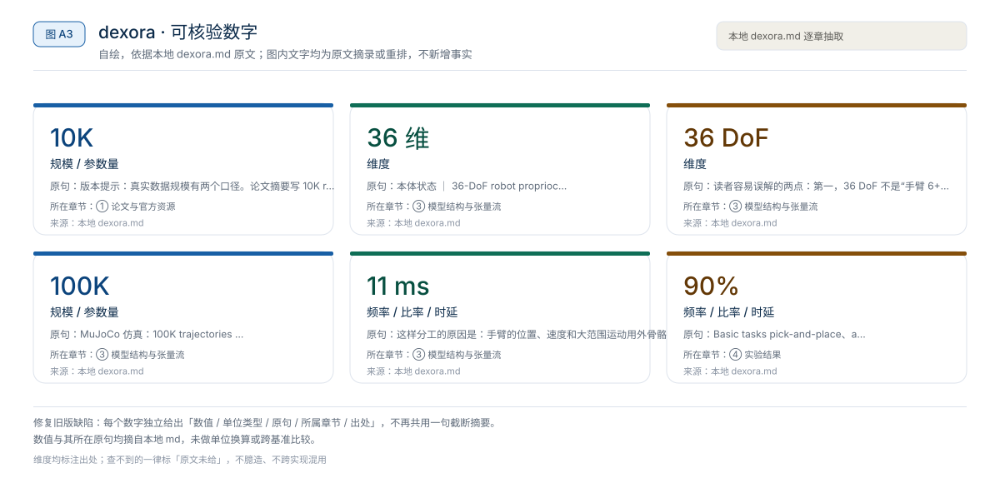
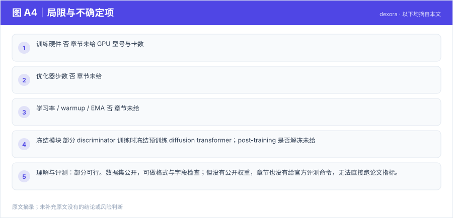

【VLA 精读 · 动作表示】ACT：CVAE + 动作分块，51.55M 参数也能做抓取
在“只有几十条示教、没有语言输入、单卡可训”的约束下，ACT 用 10 步动作块降低决策频率，并在训练时用 CVAE 潜变量给动作生成引入随机隐变量，而不是只做确定性回归。【章节】
动作表示
原题与资源：Dexora: Open-source VLA for High-DoF Bimanual Dexterity · arXiv:2605.18722 · 代码
一句话：Dexora 重新分配的是“VLA 的 embodiment 与数据质量接口”——不是只换更强的 VLM，而是让策略直接输出 36-DoF 双臂双手动作，并让训练过程按演示质量加权。【章节】
阅读成本：正文约 9019 字 / 10 个章节 / 5 张图；目录按本文原有章节顺序排列，章节内容未改动。
目录（点击跳到对应章节）：

图 A1：本文章节地图（节点即原文 h2 标题）。自绘，依据本文，不新增事实。
Dexora 把 VLA 的 embodiment 从“单臂夹爪”推到 36-DoF 双臂双灵巧手，并把遥操作数据质量显式建模进训练。本地章节转述的头条数字是：100K 条 MuJoCo 仿真轨迹、6.5M 帧、约 361h 视频；10K 级真实遥操作 episodes（release 口径 12.2K、2.92M 帧、40.5h）；basic tasks 平均成功率约 90%，dexterous benchmark 66.7%（对比基线 51.7%）；遥操作端到端延迟约 11ms。以上均为章节转述的论文摘要、项目页与数据卡口径，未在本机复测，不同 benchmark 的分数不能合成一个平均分。
来源约定：本文事实只取自本仓库 Dexora 导读，没有用模型记忆补写论文细节。
标注约定：【官方】指本地章节转述的论文/项目页/数据卡作者报告；【章节】指本地章节自己的归纳。
版本：arXiv2605.18722v1，2026-05-18 提交；代码 commit：章节未给；查阅日期 2026-11-01。
| 资源 | 入口 | 说明 |
|---|---|---|
| 论文 | arXiv:2605.18722 / HTML | 方法、数据构成、实验结果与失败案例 |
| 源码 | dexoravla/Dexora | 项目页 Code 指向；README 称含训练、推理、数据处理与遥操作代码 |
| 权重 | 章节未给 | 章节只给项目页、代码入口和数据集，没有 checkpoint 地址 |
| 项目页 | dexoravla.github.io | 总览图、机器人外观、方法图、结果与 cross-embodiment 展示 |
| 数据集 | Dexora/Dexora_Real-World_Dataset | 真实遥操作数据，含任务级视图与多视角视频 |
论文题目：Dexora: Open-source VLA for High-DoF Bimanual Dexterity；arXiv：2605.18722v1；版本：2026-05-18 提交；代码 commit：章节未给；查阅日期：2026-11-01。章节另提到 ICRA 2026 官方奖项页面把 Dexora 列入 Best Paper Award on Robot Manipulation and Locomotion 候选名单【官方】。
版本提示：真实数据规模有两个口径。论文摘要写 10K real teleoperated episodes、2.92M frames；Hugging Face 数据卡和代码 README 的真实数据 release 写 12.2K episodes、2.92M frames、40.5h。本文统一写“10K+ 级真实 episodes”，涉及具体 release 数字时标 12.2K 口径，不把两者混成同一个数。
图 A2：一句话主张与速览字段。自绘，依据本文，不新增事实。
一句话：Dexora 重新分配的是“VLA 的 embodiment 与数据质量接口”——不是只换更强的 VLM，而是让策略直接输出 36-DoF 双臂双手动作，并让训练过程按演示质量加权。【章节】

图 1：Dexora 的混合遥操作、质量筛选与 diffusion policy 训练信息流。自绘，依据本地导读；不是论文原图。
对比主流路径：单臂夹爪 / 双臂低自由度夹爪 / 单臂灵巧手 + 等权行为克隆 → 双臂双手 36-DoF + 质量感知的 diffusion-transformer 训练。

图 A3：本文可核验的数字摘录。自绘，依据本文，不新增事实。
一个具体任务走一遍 · 本文形状与接口速查（以下均摘自原文，未作推算）：
d(C_t) ∈ (0, 1]【章节】 ｜ 只在训练期使用| 项目 | 章节给出的内容 | 说明 |
|---|---|---|
| 视觉 | 四路同步视角：头部 ego-centric、左腕、右腕、第三人称 scene camera【官方】 | 数据卡口径；分辨率与帧率章节未给 |
| 本体状态 | 36-DoF robot proprioception【官方】 | 36 维如何分配到双臂与双手，章节未拆分 |
| 语言 | language instruction【官方】 | 与 observation 一起作为 discriminator 条件 |
| 动作 | low-level action，36-DoF 连续控制【章节】 | chunk 长度、控制频率章节未给 |
| 策略 | diffusion-transformer policy【章节】 | 预训练后冻结，用于训练 discriminator |
| 质量分 | discriminator 输出 d(C_t) ∈ (0, 1]【章节】 | 只在训练期使用 |
章节反复强调是 36-DoF dual-arm dual-hand system，并纠正“6 自由度双手”的常见误读：项目页里的 6-DoF Fingers 是低自由度手指对照条件，不是 Dexora 的自由度总数。【章节】
读者容易误解的两点：第一，36 DoF 不是“手臂 6+6、手指若干”的公开拆分，章节没有给逐部件维度表；第二，动作输出是连续 low-level action，不是离散 token，因此不能套用自回归动作 token 的序列长度分析。
章节把数据分成两部分，职责不同【章节】：
MuJoCo 仿真：100K trajectories / 6.5M frames / 约 361h
真实遥操作：论文 10K episodes；release 12.2K episodes / 2.92M frames / 40.5h仿真数据提供大规模任务覆盖和 embodiment-matched 预训练，任务包括 pick-and-place、assembly、articulation；真实数据提供真实接触、摩擦、材质、光照、遮挡和操作者策略。两者共用同一套双臂双手 embodiment，这是“仿真能补真实”的前提。
真实数据在 Hugging Face 上按 LeRobot / LIBERO-2.1 风格组织，章节给出的字段包括 data/chunk-xxx/episode_xxxxxx.parquet、videos/chunk-xxx/observation.images.*、meta/info.json、meta/episodes.jsonl、meta/episodes_stats.jsonl、meta/modality.json、meta/stats.json、meta/tasks.jsonl。【官方】这套结构让多视角 RGB、36-DoF state/action、language instruction 和 task metadata 能在同一条 episode 上对齐。
| 步骤 | 输入 | 做什么 | 输出 |
|---|---|---|---|
| 1. data filtering | 真实遥操作片段 | 按 acceleration、jerk 等运动学指标预筛；再用 replay / post-validation 检查任务完成与碰撞 | 较干净的训练片段 |
| 2. discriminator training | 冻结的预训练 diffusion transformer；observation + language 条件 | 训练 discriminator 估计 clip 质量 | d(C_t) ∈ (0, 1] |
| 3. quality-aware post-training | 片段 + 质量分 | 高质量片段对 diffusion loss 权重大，低质量片段权重小 | 最终 policy |
按章节文字可以写成下面这个示意式（不是论文原式；归一化方式、loss 具体形式章节未给）：
$$
\mathcal{L}(\theta) \;=\; \frac{1}{\sum_i d_i}\sum_i d_i \cdot \mathcal{L}_{\text{diff}}\big(\theta;\, C_i\big)
$$
其中 d_i 是第 i 个 clip 的质量分。章节的解释是：低自由度夹爪还能靠控制器滤波掩盖示教抖动，双手灵巧操作中手指的微小抖动会直接导致滑落、卡住或左右手不同步，所以“少学坏片段”在高自由度下收益更大。【章节】
关键边界：推理时只使用 policy，discriminator 不参与在线控制，因此它不是运行时 reward model，也不是 RL critic。章节没有给 discriminator 的网络结构、训练数据量、正负样本定义或质量分的校准方法。
章节给出的遥操作链路是【官方】：
外骨骼背包 → 双臂大范围 kinematics
Apple Vision Pro markerless hand tracking → 手指精细 articulation
同一套动作 → 物理双臂双手机器人 + MuJoCo digital twin这样分工的原因是：手臂的位置、速度和大范围运动用外骨骼更稳；手指关节用 markerless tracking 更方便，不必给每根手指贴复杂 marker。真实与仿真共用接口还能降低 sim-to-real 的 embodiment mismatch，让模拟数据和真实数据更容易合到一起训练。项目页文字说明平均端到端遥操作延迟约 11 ms【官方】；这是采集链路的延迟，不是策略推理延迟。
章节只给汇总数字，没有给逐任务的任务数、每任务 trials、种子或成功判定细则。下表把“章节给出的结果”和“不能说明什么”并列，避免把不同口径横比。
| 评测方向 | 章节给出的结果 | 协议细节 | 读法 |
|---|---|---|---|
| Basic tasks | pick-and-place、assemble/disassemble、articulated object 上平均成功率约 90%【官方】 | 任务数、trials 未给 | 说明双臂双手 VLA 也能覆盖基础操作，不是只会灵巧任务 |
| Dexterous tasks | 平均 dexterous success 66.7%，对比基线 51.7%【官方】 | 基线身份与逐任务分数未给 | 高自由度与质量感知训练带来明显收益，但不能拆出各自贡献 |
| OOD generalization | 测 unseen background、lighting、object、occlusion、clutter、height change【官方】 | 具体数值未给 | 只能确认测了这些扰动，不能引用提升幅度 |
| Cross-embodiment | 从 36-DoF policy 迁移到 single-arm gripper、dual-arm grippers、single-arm low-DoF hand【官方】 | 微调数据量与步数未给 | 高→低迁移相对可行，低→高仍然困难 |
| Discriminator ablation | 有 discriminator 时动作更平滑、任务更容易成功【官方】 | 数值未给 | 方向性结论，不是可复算的消融 |
读法：
真机与失败案例：项目页展示的失败包括 instruction ambiguity、视觉相似物体误判、抓取摩擦不足、双臂不同步、pose drift 和 workspace boundary violation【官方】。这些失败对应语言 grounding、物理接触、长时程误差积累、双臂同步和工作空间约束五类开放问题，章节没有给各类失败的出现频率。
来源：本地 Dexora 导读 §3、§9 转述论文摘要与项目页。
章节只给 discriminator 的方向性对照，没有给逐项数值，也没有给仿真/真实数据比例、自由度数量、过滤阈值或 diffusion 步数的消融。
| 对照 | 任务 / 指标 | 章节结论 | 数值 |
|---|---|---|---|
| 有 / 无 discriminator | dexterous tasks 成功率、动作平滑度 | 有 discriminator 时动作更平滑、任务更容易成功 | 未给 |
| 6-DoF fingers vs 12-DoF fingers | 拧瓶盖任务 | 低自由度手指不如 12-DoF fingers | 未给 |
| 仿真数据 / 真实数据配比 | 未给 | 章节未做该消融 | 未给 |
读者该不该复用：如果遥操作数据里明显混有抖动、碰撞、半成功片段，质量加权值得加，代价是要额外训练一个 discriminator 并承担打分偏差；如果数据来自脚本化专家或仿真回放，片段质量本身较均匀，收益可能不足以抵消复杂度。章节没有给质量分阈值、权重温度或 curriculum，复现时这些都需要自己定。
来源：本地 Dexora 导读 §3、§9。
章节没有给策略推理延迟、推理显存、训练显存或控制频率，只给了遥操作链路延迟。因此不能从“36-DoF + diffusion transformer”推算控制频率。
| 项目 | 章节给出的数值 | 口径 |
|---|---|---|
| 遥操作端到端延迟 | 约 11 ms | 外骨骼 + Vision Pro → 机器人 / MuJoCo 的采集链路 |
| 策略推理延迟 | 章节未给 | 不能由 11ms 推算 |
| 推理显存 | 章节未给 | 未给 checkpoint 体积与精度 |
| 训练显存 | 章节未给 | 未给模型规模与并行策略 |
| 动作 chunk / 控制频率 | 章节未给 | 无法把单次前向换算成闭环频率 |
读法：
11 ms 说明遥操作采集链路足够低延迟，操作者不会因反馈慢而过度补偿，从而减少演示抖动；它不说明 policy 能在 90Hz 下闭环。1000 / 延迟 只说明某条链路的调用频率，不等于动作执行频率或端到端反馈频率。用 11ms 算出的约 91Hz 是遥操作采样率，不是策略调用率。来源：本地 Dexora 导读 §5。
章节没有给 GPU 数、优化器步数、有效 batch、每卡 microbatch、梯度累积、学习率、warmup、EMA 或冻结策略，因此无法填出标准训练配方表，也无法用 B_eff = N_GPU × B_micro × N_accum 反推有效 batch。
| 训练项目 | 章节是否给出 | 内容 |
|---|---|---|
| 数据规模 | 是 | 仿真 100K 轨迹 / 6.5M 帧；真实 10K+ episodes / 2.92M 帧 |
| 训练硬件 | 否 | 章节未给 GPU 型号与卡数 |
| 优化器步数 | 否 | 章节未给 |
| 有效 batch / microbatch / 累积 | 否 | 无法反推 |
| 学习率 / warmup / EMA | 否 | 章节未给 |
| 冻结模块 | 部分 | discriminator 训练时冻结预训练 diffusion transformer；post-training 是否解冻未给 |
| 并行策略 | 否 | 章节未给 |
三级复现的可行性：
单卡读者更现实的做法是先在公开数据子集上验证数据管线与加权 loss 能跑通，再谈规模；不要用“36-DoF 模型很大”去猜训练成本。
来源：本地 Dexora 导读 §3、§6、§10。
章节只给仓库的模块级描述，没有给具体文件路径；下表按 README 声明的模块组织，实际路径需按固定 commit 核对。
| 顺序 | 路径 / 模块 | 阅读重点 |
|---|---|---|
| 1 | 仓库根 README | 安装、数据准备、训练/推理入口；确认当前 release 的真实数据口径 |
| 2 | training pipeline | 数据加载、diffusion policy、质量加权 loss 的训练循环 |
| 3 | BSON → LeRobot v2.1 converters | 原始遥操作记录如何转成 LeRobot 数据集 |
| 4 | Vision-Pro teleoperation tools | 手部 tracking 与机器人指令的映射 |
| 5 | MuJoCo digital twin / replay validation | 仿真镜像、replay 与任务完成检查 |
| 6 | real-robot inference stack | 观测预处理、策略前向、安全限幅与执行 |
坑（章节明确提示或可直接推出）：
6-DoF Fingers 是对照条件，不是 Dexora 的总自由度；按 6 DoF 解读会完全错估动作空间。meta/modality.json 与 meta/stats.json 决定字段映射和归一化，换本体时最容易在这里出错。章节没有公开 checkpoint，因此严格意义上的“从 checkpoint 开始”不成立。下面按“数据 → 代码 → 训练”的可做程度排列，命令均为教学示例，未在本机验证。
git clone https://github.com/dexoravla/Dexora
cd Dexora
# 章节未给 commit；复现记录中应自行固定一个 commit hash# 教学示例：章节只给数据卡地址，未给官方下载命令
huggingface-cli download Dexora/Dexora_Real-World_Dataset \
--repo-type dataset \
--local-dir data/dexora下载后先看 meta/info.json、meta/modality.json、meta/stats.json，再读一条 parquet episode，最后对齐四路视频与 36-DoF state/action。这一步能验证字段名、维度顺序和归一化统计，不能验证策略性能。
章节没有给训练入口与超参，只能做最小自检：构造一个小 batch，确认 observation、language、action 的维度和 mask 对齐，确认加权 loss 在 d_i = 1 时退化为普通 diffusion loss，确认保存与恢复可用。任何具体学习率、步数都需要自己扫，不能标成“官方配方”。
需要双臂双灵巧手硬件或等价 digital twin、外骨骼与 Vision Pro 遥操作链路、MuJoCo 资产、数据下载权限与磁盘、diffusion-transformer 训练算力，以及安全限幅、碰撞检查、同步控制和急停机制。章节明确不建议承诺“一键复现切菜/拧瓶盖真机效果”。【章节】
可复用的是“高自由度 embodiment + 混合遥操作 + 质量加权”的组合，不是照搬 36-DoF 硬件或它的成功率。
相关章节：G0.5、π0、PRTS、Dexora 导读、01 技术专题。
本文判断：可复用的是“高自由度 embodiment + 混合遥操作 + 质量加权”的组合，不是照搬 36-DoF 硬件或它的成功率。
局限与不确定项（以下均摘自本文，未作推断）：

图 A4：局限与不确定项摘录。自绘，依据本文，不新增事实。
覆盖范围：本页新增的导读、目录、章节地图、数字卡与局限清单，均为原文信息的重排或摘录；正文、数据与实验结论未改动。